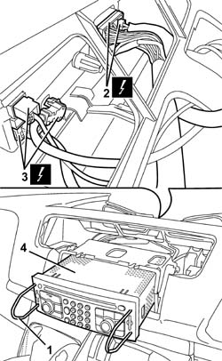

5580P20 CENTRALINA DEL CONNECT - S.R.
- Path
- Procedures > 55 ELECTRICAL EQUIPMENT > 5580 SPECIAL ACCESSORIES > 5580P CONNECT PANEL > 5580P20 CENTRALINA DEL CONNECT - S.R.
- Kind
- repair procedure (removal / refitting; the operation number is the code)
- Applies to
- all engines; all production periods
- Interactive page
- https://sloeber94.github.io/elrnDB-fUlss/en/#/179007640
Applies to: all engines; all production periods
 Removing
Removing
 Refitting
RefittingOp. 5530B56 BATTERY DRIP TRAY COVER - R.R.
Disconnect the negative battery terminal.
Op. 7040A74 TRIM UNDER CONTROL PANEL - R.R.
Op. 5010B66 AIR DUCT BETWEEN TIMING CASING AND CENTRE VENT IN DASHBOARD - R.R.
Op. 5010C30 CENTRAL AIR OUTLET ON FASCIA - R+R
1. Using tools with the parts code no. 46515517, partly extract the Connect control unit.
2. Disconnect the electrical connections.
3. Disconnect the electrical connections for the aerials.
4. Remove the Connect control unit.

Applies to: all engines; all production periods
Refitting
RemovingPlace the Connect control unit inside the support.
Disconnect the electrical connections for the aerials.
Connect the electrical connections.
Press the Connect fully home until it clicks into place.
Op. 5010C30 CENTRAL AIR OUTLET ON FASCIA - R+R
Op. 5010B66 AIR DUCT BETWEEN TIMING CASING AND CENTRE VENT IN DASHBOARD - R.R.
Op. 7040A74 TRIM UNDER CONTROL PANEL - R.R.
Connect the negative battery terminal.
Topics linked from this page (4)
- 5010B66 AIR DUCT BETWEEN TIMING CASING AND CENTRE VENT IN DASHBOARD - R.R.
- 5010C30 CENTRAL AIR OUTLET ON FASCIA - R+R
- 5530B56 BATTERY DRIP TRAY COVER - R.R.
- E2010 SIDE LIGHTS / NO. PLATE LIGHTS
Topics that link to this page (23)
- N11 RADIO CANNOT BE HEARD, IS HARD TO HEAR
- N15 CD CHANGER NOT WORKING
- N33 SUL SISTEMA I.C.S. L'AUDIO (DISPOSITIVO LETTORE COMPACT DISC) NON FUNZIONA
- N34 ON THE I.C.S. DEVICE, SOUND' CAN BE HEARD BUT THE DISPLAY IS NOT WORKING
- N35 I.C.S. TELEPHONE DEVICE NOT WORKING
- N36 THE NAVIGATOR IS NOT WORKING
- N40 NAVIGATOR DOES NOT RECEIVE THE G.P.S. SATELITES
- N65 CONNECT NOT WORKING
- N70 CONTROLS ON THE STEERING WHEEL NOT WORKING
- N71 CONNECT DOES NOT RECEIVE VOICE MESSAGES
- 5010B24 UNDER-FACIA AIR DUCTS R R
- 5010B39 FRONT CONNECTION FOR CENTRAL AIR DUCT TO REAR SEATS - R R
- 5010B45 DUCT FROM CLIMATE CONTROL SYSTEM - R R
- 5040C13 AIR CONDITIONER HEATER/DISTRIBUTOR ASSEMBLY - R R
- 5040C22 AIR CONDITIONING FAN ASSEMBLY - R.R.
- 5040C50 AIR CONDITIONING HEATER RADIATOR - R.R.
- 5040C64 A/C MANUAL CONTROL SWITCH (ONE) - R+R
- 5040D75 AIR CONDITIONING RECIRCULATION FLAP CONTROL MOTOR - R.R.
- 5040D90 AIR CONDITIONER SYSTEM WIRING BUNDLE - R R
- 5580P24 CONNECT CONTROL UNIT SUPPORT - R.R.
- 7040A10 DASHBOARD TRIM - R+R
- 7040A97 FACIA TRIM SUPPORT BEAM - R R
- 7040L17 PASSENGER COMPARTMENT FLOOR FRONT CARPET - R R